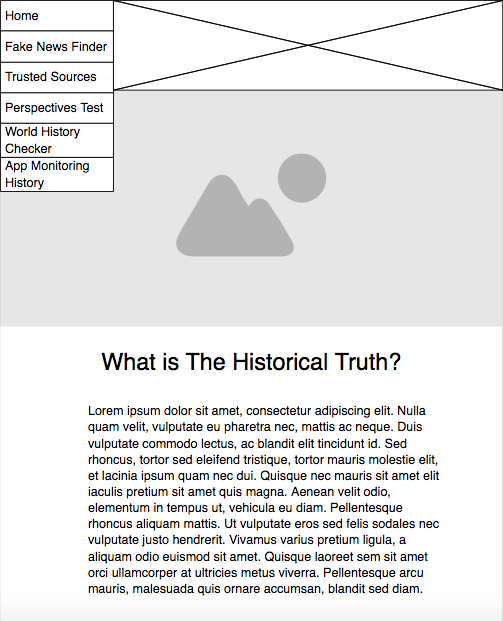

Finding the truth amoung the lies
Project Overview
In today's confused society it is very difficult to figure out what’s real and what’s fake. Corporations and news media are consistently lying or not giving the full amount of information on any subject, and are tricking people into believing falsities that most of the time simply aren’t true. Social media is also an open casket for lies, as everyone now has a voice to put in their opinion, and through the art of Chinese whispers, change stories till they are distorted and is rendered useless information. Now the truth can be obvious to everyone without the need to fact check every article in existence because this does it for you. The Historical Truth is an app that watches the website’s or news sites that you go on and searches through its sources and real creators, and the people paying the creators and informs you of any hidden elements to the website you are on, in case it’s lying about the information being given to you. This app will be able to give you a complete in-depth perspective on the sources of the information being presented to you, and any potential bias that the information might contain.
Function
This app functions by taking knowledge from all known sources of the internet and judges them together against the same question, or kind of information. It will mostly pick from scholarly sources that have been proven either correct or as close to the truth as you can, but will also judge the source of the information by the person, or company, that is giving it. For example, if you are looking at a news website you will be given the sources of the article, who and what company are funding this article, whether it is alike to other news articles coming out at the same time, and whether or not the article can be trusted on historical grounds or is meant to mislead the reader.
Why
Why make an app for judging the sources of information people receive? This is so that people don’t get misled by websites spreading what is nowadays called, “Fake News”. Most people have never been taught how to judge sources of information, as this is a skill only highly developed historians are ever trained in, so there is a tendency to believe whatever is heard first. This leads to much misinformation and lies being spread among our society and being believed because people can’t tell the real from the fake. This app is a response to growing manipulation by companies and governments and will help people to understand the world around them better. It will also encourage people to look harder into their sources of information, and broaden their minds to new thinking and ideas instead of being trapped by a torrent of lies of highly biased information.
Inspiration
Fact-Checkers
- https://mediabiasfactcheck.com/
- https://www.snopes.com/
- https://apps.apple.com/us/app/factstream/id1327422405#?platform=ipad
- https://www.politifact.com/
These websites are other fact-checking websites. Some run alongside other apps, like Facebook, and some rate news sites based on their bias. Many of these do not help for understanding why we are being lied to and for what purpose, and none of these websites explain that. To understand society you must understand the reason why people lie or people misuse the truth to their benefit, and my app aims to educate people in not only the truth but also help people's understanding of why they are being lied to.
Layout Examples
Visual Design
Logo:
Secondary Logo:
Fonts
Primary Fonts
Colour Palette
Page Layouts
Home Page:
Fake News Finder:

Trusted Sources:
Perspectives Test:
World History Checker:
App Monitoring History: